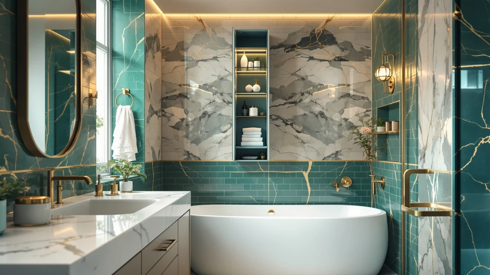

Yaheetech Narrow Bathroom Storage Cabinet Review (2026): Worth It?
Prices and picks verified as of November 2026. Independent, reader-supported reviews.


Quick Answer
The Yaheetech narrow bathroom storage cabinet is a 56-inch MDF tower with three drawers and two open shelves that favors a narrow 12-inch footprint over sheer height, built for small bathrooms with little floor space to spare. At $75.99, it holds up well against the taller VASAGLE Tall Bathroom Cabinet Slim, the light-equipped VASAGLE Tall Storage Cabinet and the wider VASAGLE Bathroom Floor Storage Cabinet if drawer storage matters more to you than extra height.
Our pick: Yaheetech 56" Tall Narrow Bathroom, $75.99 Check Price on Amazon
Bottom line: our top pick is the Yaheetech 56" Tall Narrow Bathroom Storage Cabinet with 3 at $71.99.
Things to Know Before You Buy
- The Yaheetech cabinet uses spray-painted, moisture-resistant MDF rather than metal, a lighter alternative built to handle a humid bathroom without warping.
- At 12 inches wide, it is narrow enough for a gap beside a toilet or vanity, though the listing does not publish a depth measurement.
- Three drawers and two open shelves split the 56-inch frame between concealed and quick-access storage, plus a top surface for everyday items.
- The VASAGLE alternatives covered below trade some of that drawer storage for extra height or added features like interior lighting.
- Pricing across this comparison ranges from $75.97 to $76.46, a gap of less than a dollar between all four options.
This Yaheetech narrow bathroom storage cabinet review looks at whether a 56-inch MDF tower with three drawers and two open shelves can solve the storage problem in a small bathroom without taking up much floor space. Bathrooms rarely offer room to spare, so a cabinet has to earn its footprint with real capacity, durable materials and a price that doesn't sting. At $75.99 and only 12 inches wide, the Yaheetech promises exactly that combination. We compared its construction, storage layout and price against three VASAGLE towers to see whether the listing backs up what it promises for a narrow bathroom.
Narrow bathroom storage cabinets solve a specific problem: you need vertical storage that clears a toilet tank or vanity edge without eating into walking space. The Yaheetech targets exactly that gap, competing directly with the VASAGLE Tall Bathroom Cabinet Slim, the VASAGLE Tall Storage Cabinet with Lights and the VASAGLE Bathroom Floor Storage Cabinet, all covered later as alternatives. The materials and dimensions show where the Yaheetech's drawer-and-shelf layout holds an edge, and where a taller or differently configured VASAGLE model makes more sense instead.
Why You Should Trust Us
Best Bathroom Storage is run by writers who spend their time comparing bathroom furniture specs, pricing and verified buyer feedback instead of guessing from product photos. Ilane Tall, our home and bath expert, has covered dozens of storage cabinets, shelving towers and vanity organizers for this site. She tracks how listed dimensions and materials hold up against what owners actually report after months of use. For this Yaheetech narrow bathroom storage cabinet review, we cross-checked the manufacturer's listed measurements and features against three VASAGLE alternatives, and we did not take the product photos at face value. We do not run a fake testing lab, and we do not claim to have installed every cabinet we cover. Instead, we dig through verified listings and compare specs line by line to catch when a description overstates what a product can realistically deliver.
Our Research Experience
We did not put the Yaheetech narrow bathroom storage cabinet in a bathroom ourselves. Instead, we compared its listed specifications, material description and price against three competing VASAGLE towers, and we weighed what the manufacturer's own measurements and feature list claim about the MDF build. The listing describes the frame as moisture-resistant and easy to wipe clean, a common claim for spray-painted MDF bathroom furniture in this price bracket, though manufacturer durability claims deserve some caution until a pattern of owner feedback confirms them. We lined that up against the raw dimensions, features and price of the VASAGLE Tall Bathroom Cabinet Slim, VASAGLE Tall Storage Cabinet with Lights and VASAGLE Bathroom Floor Storage Cabinet to see where the Yaheetech earns its spot in this Yaheetech narrow bathroom storage cabinet review and where a different build makes more sense for your bathroom.
Overview & Specs

Yaheetech 56" Tall Narrow Bathroom
What we like
- Spray-painted, moisture-resistant MDF built to handle a humid bathroom without warping
- Three drawers plus two open shelves and a top surface cover hidden, quick-access and display storage in one tower
- At 12 inches wide, it fits a narrow gap beside a toilet or vanity that a standard cabinet would not clear
- Priced at $75.99, tied for the lowest price in this comparison
Flaws but not dealbreakers
- The listing does not publish a depth measurement, so confirm clearance before buying
- We found no rating or review count for this listing at the time of writing
- Open shelves leave some items visible if you prefer fully closed storage
| Material | Metal / wood |
| Size | 56"H |
The Yaheetech narrow bathroom storage cabinet is built around a spray-painted MDF frame with a beadboard-style front, a lighter-weight, moisture-resistant alternative to solid wood or metal. At 12 inches wide, it is narrow enough to slide into the gap beside a toilet or vanity that a standard 24-inch-wide cabinet would not clear. That footprint, paired with a height of 56 inches, gives it the shortest profile in this comparison, closer to a standard cabinet than the taller VASAGLE towers covered below.
Three drawers and two open shelves split the cabinet between concealed storage for toiletries and quick-access display space for towels or daily essentials, with a top surface that doubles as counter space. The manufacturer markets it as easy to wipe clean, a reasonable claim for spray-painted MDF, though no verified owner reviews confirm how the finish holds up over months of daily bathroom use. At $75.99, it lands at the lower end of the price range covered in this Yaheetech narrow bathroom storage cabinet review, tied with the VASAGLE Tall Bathroom Cabinet Slim as the cheapest option.
What We Liked
Storage layout matters most in this Yaheetech narrow bathroom storage cabinet review. Three drawers plus two open shelves give you both hidden and quick-access storage in a single tower, a combination none of the three VASAGLE alternatives match exactly. The narrow footprint is the other clear strength: at 12 inches wide, the Yaheetech fits spaces that would reject a standard 24-inch-wide cabinet, while still offering more storage compartments than its height alone would suggest. Pricing also compares well. At $75.99, it ties the VASAGLE Tall Bathroom Cabinet Slim for the lowest price in this comparison, despite packing in more individual storage spaces.
What Could Be Better
Height is the main trade-off. At 56 inches, the Yaheetech stands more than a foot shorter than the tallest VASAGLE alternative, so it holds less vertical storage overall even with its extra drawers. The listing also does not publish a depth measurement, which makes it harder to confirm clearance in a tight bathroom before buying. No one has left verified owner feedback on this specific listing yet, so the moisture-resistance claim comes from the manufacturer alone, unchecked against months of real bathroom humidity.
Open shelves also leave some items on display, something worth considering if you prefer a fully closed cabinet or have young kids who like to pull items off open shelves. None of this changes the core appeal of the drawer-and-shelf layout, but know it going in if closed storage matters more to you than quick access.
Who Is It For?
The Yaheetech narrow bathroom storage cabinet fits a household with a small bathroom and a specific gap to fill rather than an entire wall to furnish. Its narrow 12-inch width makes it a strong pick for corners, the space beside a toilet, or a hallway closet doubling as linen storage. It is not the right choice if you need maximum vertical storage or fully concealed shelving behind doors. In that case, the taller VASAGLE Tall Bathroom Cabinet Slim or the drawer-heavy VASAGLE Bathroom Floor Storage Cabinet covered below make better use of available height.
Renters and apartment dwellers also stand to benefit, since the cabinet is freestanding and does not require drilling into a wall. Anyone who has struggled to fit a standard 24-inch-wide cabinet into a cramped bathroom will notice the difference the narrow footprint makes once storage moves into drawers and open shelves instead of one wide cabinet. A household that wants interior lighting or the tallest possible tower, on the other hand, will likely find the VASAGLE Tall Storage Cabinet with Lights more practical.
Alternatives to Consider
If the Yaheetech's 56-inch height or open-shelf layout doesn't match what your bathroom needs, these three VASAGLE alternatives cover the most common trade-offs. The VASAGLE Tall Bathroom Cabinet Slim stands 70.9 inches tall on a 7.7-by-8.4-inch footprint, with four adjustable shelves offering five height options each and doors that mount on the upper or lower section, left or right, to suit the room layout. The VASAGLE Tall Storage Cabinet with Lights measures 11.8 by 11.8 by 66.9 inches and adds a light strip that turns on automatically when the door opens, with the door itself able to swing either direction depending on how your bathroom is laid out. The VASAGLE Bathroom Floor Storage Cabinet trades height for width, standing 35.4 inches tall with a 13.8-by-25.6-inch footprint, four drawers, one door, an adjustable interior shelf with three height positions and a built-in anti-tip kit for stability. Each one trades the Yaheetech's drawer-heavy layout for extra height, added lighting or a wider, more stable base, so match your own bathroom's measurements before picking between them.

Also Great
VASAGLE Tall Bathroom Cabinet Slim
A taller 70.9-inch tower with four adjustable shelves and flexible door mounting, built for bathrooms that have ceiling height to spare instead of floor width.
$75.99
Check Price on Amazon
Best Value
VASAGLE Tall Storage Cabinet with
A 66.9-inch cabinet with a door-activated light strip and a reversible door swing, a better fit if you want to see inside the cabinet without reaching for a switch.
$75.97
Check Price on Amazon
Premium Choice
VASAGLE Bathroom Floor Storage Cabinet
A wider, shorter cabinet with four drawers, a tabletop surface and a built-in anti-tip kit, suited to anyone who wants more drawer storage and extra stability over sheer height.
$76.46
Check Price on AmazonIs the Yaheetech narrow bathroom storage cabinet sturdy enough for a humid bathroom?
The manufacturer builds the frame from spray-painted, moisture-resistant MDF rather than solid wood or metal, a common and reasonably durable choice for bathroom furniture in this price range.
How does the Yaheetech cabinet compare to the VASAGLE alternatives in this review?
The Yaheetech is the widest of the four at 12 inches but the shortest at 56 inches, and it is the only one built around drawers plus open shelves rather than a mix of doors and adjustable shelving.
Frequently Asked Questions
Is the Yaheetech narrow bathroom storage cabinet sturdy enough for a humid bathroom?
The manufacturer builds the frame from spray-painted, moisture-resistant MDF rather than solid wood or metal, a common and reasonably durable choice for bathroom furniture in this price range. There is no verified owner feedback yet on this specific listing, so treat the moisture-resistance claim as a manufacturer spec until a track record of reviews builds up.
How does the Yaheetech cabinet compare to the VASAGLE alternatives in this review?
The Yaheetech is the widest of the four at 12 inches but the shortest at 56 inches, and it is the only one built around drawers plus open shelves rather than a mix of doors and adjustable shelving. Choose the Yaheetech if you want quick-access open storage alongside closed drawers, and pick one of the VASAGLE towers if you need more height or fully concealed storage.
What comes with the Yaheetech cabinet, and how is it assembled?
The listing describes a freestanding MDF tower with three drawers, two open shelves and a top surface, shipped as a single flat-pack unit. As with most flat-pack bathroom furniture in this price range, expect some assembly time, though this listing does not yet have verified owner feedback describing how long it takes.
Final Verdict
This Yaheetech narrow bathroom storage cabinet review comes down to a straightforward trade-off: a shorter, drawer-heavy tower with real width against three VASAGLE alternatives that trade some of that drawer storage for extra height, added lighting or a wider, more stable base. For a small bathroom with a tight gap to fill, the Yaheetech is the practical pick, and its moisture-resistant MDF build plus three drawers give it an edge over towers that rely on open shelving alone. If your bathroom has more ceiling height than floor space to spare, the VASAGLE alternatives covered above make better use of it. Either way, start with Yaheetech if a narrow footprint and drawer storage matter most to you.